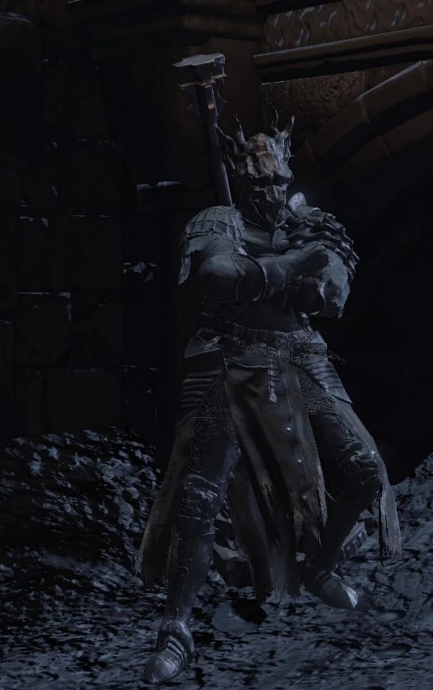

← Volver
← Volver
Sirris de los Reinos sin Sol es un NPC de Dark Souls III. Sirris es una miembro de las Espadas de la Luna Oscura que se encuentra en una misión para acabar con su abuelo, Hodrick. Ella es un personaje invocable que también puede solicitarte asistencia cuando necesite ayuda con sus oponentes. Su primer encuentro es en el Santuario del Enlace de Fuego luego de haber encendido la hoguera del Fuerte a Medio Camino.
No podrás interactuar con ella la primera vez porque ella se retirará justo después, pero en su segundo encuentro, cuando le entregas las Cenizas del Cazador de Sueños a la Sierva del Santuario, ella se presenta nuevamente en el Santuario del Enlace. Durante este segundo encuentro, ella te enseña el gesto de "Lealtad a la Luna Oscura".
| Eygon de Carim Lista de Objetos Disponibles | Cantidad | Probabilidad | Suerte |
|---|---|---|---|
| Escudo de los Gimientes | 1 | 10% | No |
| Gran Martillo de Morne | 1 | 10% | No |
Diálogo del primer encuentro
"Mmm... ¿Otro de esos No Encendidos? Todos ustedes, no muertos sin rostro, comportándose como si merecieran respeto. Mmm. No importa. Escuchen mis palabras. Si tienen algo de sentido común, buscarán un ataúd para acurrucarse dentro. Ustedes aquí, en esta tierra de Huecos, son como una frágil doncella en el frente. Si, como los demás, son tan insensatos como para hacerse los campeones... Entonces, adelante, pasen junto a la iglesia abandonada. Se enfrentarán a la muerte, y no será agradable. Suficiente muerte para dejarlos destrozados, una y otra vez... (risas)."
"Si, como los demás, eres tan insensato como para hacerte el campeón... Entonces sigue adelante, pasa junto a la iglesia abandonada. Desesperados, todos ustedes. Como pequeñas polillas, revoloteando hacia una llama."
Diálogo después de visitar la celda de Irina
"Ahh... Así que disfrutas de curiosear en las celdas, ¿verdad? ¡Pero que No Encendido tan gentil! (risas)."
"Ajá, ¿te has interesado por ella? Bueno, es un caso perdido. Ni siquiera pudo convertirse en Guardiana de Fuego. Después de traerla hasta aquí y prepararla. No tiene remedio, te lo aseguro. (risas)"
"Esa mujer es un caso perdido. Ni siquiera pudo ser Guardiana del Fuego. Te digo que no tiene remedio. (risas)"
Después de rescatar a Irina de Carim
"La rescataste, ¿verdad? ¡Qué criaturas tan curiosas y compasivas que no tienen remedio! Muy bien. De todas formas, estoy harto de cuidarla. Soy Eygon, un caballero de Carim. Soy tu aliado mientras garantices la seguridad de la niña. Y solo por ese tiempo..."
"¿Qué pasa? Mis condiciones son muy simples. Soy tu aliado mientras garantices la seguridad de la niña. Y solo por ese tiempo..."
Primer encuentro (si visitas la celda de Irina antes, lo que reemplaza ambas partes de su primer encuentro normal)
"Mmm... ¿Otro de esos No Encendidos? ¡Todos ustedes, No Muertos sin rostro, comportándose como si merecieran respeto! Ahora están husmeando en las celdas de la gente. ¡Qué noble! (risas)"
Primer Encuentro (si rescatas a Irina primero, lo que omite todo su diálogo anterior)
"Mmm... ¿Otro de esos No Encendidos? Todos ustedes, No-muertos sin rostro, comportándose como si merecieran respeto. Ahora han ido a rescatar a la muchacha... Qué criaturas tan curiosas y compasivas, sin remedio. (El resto es igual a su diálogo de rescate habitual)."
Diálogo en el Santuario del Enlace de Fuego (luego de los Vigilantes del Abismo)
"Ahhh, te conozco. Hacía tiempo que no nos veíamos en persona. Solo pasé a ver cómo le iba. ¿A qué te dedicas con este circo? ¡Esta cloaca de viejos decrépitos y degenerados! No podría estar mejor. Debe encajar a la perfección aquí. (risas)"
En la arena de Iudex Gundyr (luego de llevarse a Irina)
"Me expresé muy claramente. Mi lealtad solo se mantendrá mientras garantices la seguridad de la niña. Este caballero de Carim no perdona la traición. Incluso una mujer destrozada merece su dignidad..."

 ↑
↑